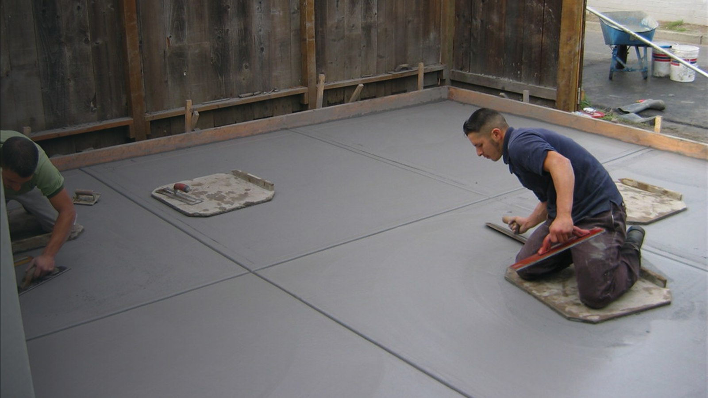

令和2年国勢調査、豊中市統計書 表19。総数は176,967世帯です。
TL;DR
- 豊中市では、ブロック塀等撤去補助が上限20万円、生垣・沿道緑化助成が上限10万円で公式に確認できます。どちらも着手前・設置前の申込みが重要です。
- 令和5年住宅・土地統計調査では、豊中市の専用住宅176,190戸のうち一戸建は54,510戸、持ち家は95,260戸です。
- 令和7年の着工新設住宅は2,244戸、自家用乗用車と軽乗用を合わせた参考値は99,935台で、駐車場・カーポート需要を見る材料になります。
- 千里ニュータウン、建築協定地区、地区計画、景観計画区域では、外観・塀・門柱・植栽のルール確認が重要です。
上限20万円ブロック塀等撤去補助
上限10万円生垣・沿道緑化助成
54,510戸一戸建の専用住宅
0.56台/世帯乗用車保有の参考値
このページでわかること
- 豊中市の住まいと車のデータ戸建て、持ち家率、着工、保有台数を数字で確認します。
- 使える補助・制度ブロック塀撤去補助と生垣・沿道緑化助成を比較します。
- 外構費用の目安工事項目別の初期検討額と変動要因を見ます。
- 状況別の考え方新築、リフォーム、駐車場、目隠し、塀、庭を分けて考えます。
- 外構タイプの選び方オープン、クローズ、セミクローズの向き不向きを整理します。
- 施工の流れと期間申請、現地確認、見積もり、着工、完了確認の順序を押さえます。
- 業者選び見積書と現地確認で損しないための確認点をまとめます。
- 素材・デザインコンクリート、フェンス、植栽、門柱などの選び方を見ます。
- キーワード別解説豊中市で検索されやすい外構テーマを深掘りします。
- よくある質問補助金、届出、費用、カーポートなどの疑問に答えます。
豊中市の外構で先に押さえる地域事情
豊中市は駅近の住宅密集地、千里ニュータウンの住宅更新エリア、建築協定や景観配慮が絡むエリアが混在します。まず住まいの母数と車の保有を数字で見て、道路との接し方と既存外構の状態を確認します。
豊中市の住まいと車のデータ
令和5年住宅・土地統計調査、豊中市統計書 表46(1)。居住世帯あり住宅は177,270戸です。
令和5年住宅・土地統計調査、表46(3)。専用住宅176,190戸の30.9%です。
令和5年住宅・土地統計調査、表46(3)。専用住宅ベースの持ち家率は54.1%です。
令和7年の戸数。豊中市統計書 表47、資料は建築着工統計調査です。
令和7年4月1日の自家用乗用車等99,935台を、令和5年住宅・土地統計調査の世帯数177,940で割った算出値です。
確認日: 2026年6月22日。統計出典は令和7年豊中市統計書（第3章 国勢調査、第6章 運輸および通信、第9章 建設および住宅）。住宅・土地統計調査の値は標本調査による推計値です。
市東部から吹田市にまたがる千里丘陵に開発されたニュータウンで、全体1,160ha、豊中市域369haと公式に案内されています。
千里ニュータウン豊中市域は人口減少後、集合住宅建替えなどで2015年に約3万5千人まで回復したとされています。
豊中市は都市景観形成マスタープランを運用し、2024年4月1日から改定版を運用しています。
地区整備計画のある区域で一定の行為をする場合は、着手30日前までの届出が必要です。
豊中市には9か所の建築協定地区があり、地域ごとの住環境保全ルールを確認する余地があります。
令和7年豊中市統計書には、住宅数、所有関係、建て方別専用住宅数、道路、公園などの表があります。
状況別に見る外構工事の考え方
豊中市では、狭い前面道路、既存塀、植栽管理、駐車スペース確保が見積もりの差になりやすいポイントです。
新築外構一式
門柱、アプローチ、駐車場、フェンス、植栽を一括で考えます。建物引渡し直前に慌てないよう、排水と駐車動線を先に固めます。
古い塀・門まわりのリフォーム
既存ブロック塀や門柱の撤去、境界確認、残土処分の扱いを分けます。安全面は点検表と専門家相談を前提にします。
駐車場・カーポート
1台分の有効寸法、前面道路からの切り返し、柱位置、雨水の流れを確認します。狭小地では柱位置が使い勝手を左右します。
フェンス・植栽
道路や隣地からの視線を遮る高さ、風抜け、メンテナンス、建築協定や景観の制限を合わせて検討します。
ブロック塀の撤去・補修
対象条件を満たす撤去は、豊中市のブロック塀等撤去補助で上限20万円が確認できます。交付決定前に契約すると利用できないため、点検と申込み順序を先に見ます。
庭の手入れ軽減
防草シート、砂利、自然石、植栽整理を組み合わせ、見た目と管理負担のバランスを取ります。
豊中市で外構費用を見るときの目安
下の金額は初期検討用の全国的な目安です。豊中市の実際の見積もりは、搬入経路、既存撤去、残土、勾配、排水、素材で変わります。

| 工事項目 | 目安 | 豊中市で確認したい変動要因 |
|---|---|---|
| 新築外構一式 | 50万から200万円 | 門柱、駐車場、フェンス、植栽、照明、宅配ボックスの範囲 |
| 外構リフォーム | 10万から100万円 | 撤去、既存利用、境界、道路側の安全確保、廃材処分 |
| カーポート1台 | 20万から40万円 | 柱位置、屋根材、耐風、前面道路からの出入り、サイクルポート併設 |
| 駐車場コンクリート1台 | 15万から40万円 | 掘削、残土、勾配、排水、目地、既存舗装撤去 |
| フェンス1m | 5,000円から60,000円 | 高さ、目隠し率、風抜け、基礎、境界位置、景観配慮 |
フェンス写真 準備中
カーポート写真 準備中
門まわり写真 準備中
豊中市で確認できる補助・制度
補助金は年度、受付期間、予算、対象条件で変わります。2026年6月時点で豊中市公式ページから確認できた制度を、申請時期まで含めて比較します。
| 制度名 | 対象 | 補助率・内容 | 上限 | 申請時期 | 出典 |
|---|---|---|---|---|---|
| ブロック塀等撤去補助 | 道路に面し、高さ60cm超で安全性が確認できないブロック塀等を全て撤去する工事。1敷地1回限り。 | 工事金額の4/5、または1㎡13,000円×面積の4/5のうち低い額を上限額と比較。 | 20万円 | 撤去工事の着手・契約前。交付決定前に着手すると利用不可。 | 豊中市公式 |
| 生垣・沿道緑化助成 | 道路に面し外部から眺望できる生垣・沿道緑化。生垣は延長2m以上、樹高原則1m以上、5年以上保存管理など。 | 生垣は設置費用の4/5、沿道緑化は設置費用の1/2。 | 生垣と沿道緑化を合わせて10万円 | 設置前申込み。見取図、植栽計画平面図、見積書、設置前写真を用意。 | 豊中市公式 |
| 景観計画区域の行為届出 | 景観計画区域で、まちなみに影響する規模の建築物・工作物など。 | 景観面の協議・届出制度。都市計画課窓口、郵送、オンライン手続きに対応。 | 補助制度ではありません | 法令等の申請手続き前に確認。 | 豊中市公式 |
| 地区計画の届出 | 地区整備計画のある区域で、一定の建築物・工作物・形態意匠変更などを行う場合。 | 地区計画への適合確認。添付図書の不備や不適合があると受理されない場合があります。 | 補助制度ではありません | 行為着手30日前まで。建築確認申請を要する場合は確認申請前。 | 豊中市公式 |
| 建築協定 | 豊中市内の建築協定地区。2026年6月時点で9か所が公式に掲載されています。 | 地域の住環境を守るルール。外構の高さ、色、配置に関係する場合があります。 | 補助制度ではありません | 計画段階で協定内容を確認。 | 豊中市公式 |
オープン・クローズ・セミクローズの選び方
豊中市の住宅地では、敷地の広さ、前面道路、通行量、視線、駐車のしやすさを同時に見ると方向性を決めやすくなります。
オープン外構
敷地を広く見せやすく、駐車スペースを確保しやすい形。駅近や狭小地では現実的ですが、防犯照明や視線対策を組み合わせます。
クローズ外構
塀や門扉で囲う形。安心感は出ますが、費用、圧迫感、景観・地区ルール、ブロック塀安全性を慎重に確認します。
セミクローズ外構
低めの塀、フェンス、植栽で必要な部分だけ隠す形。豊中市の住宅地では、費用と暮らしやすさのバランスを取りやすい選択肢です。
施工の流れと期間の見方
補助制度や届出が関係する場合は、見積もり前後で確認順序が変わります。工事開始前の写真と書類を残しておくと安心です。
1. 要望整理
駐車台数、目隠し、植栽、宅配ボックス、照明、防草などを分けて優先順位を決めます。
2. 現地確認
道路幅、勾配、排水、境界、既存塀、搬入経路、電気・水道位置を写真付きで確認します。
3. 制度確認
ブロック塀等撤去補助、生垣・沿道緑化助成、景観計画、地区計画、建築協定を必要に応じて確認します。
4. 見積比較
撤去、残土、基礎、商品代、施工費、諸経費、保証範囲を同じ粒度で比較します。
5. 着工
近隣挨拶、車両搬入、騒音時間、道路側の安全養生を確認して進めます。
6. 完了確認
勾配、排水、ぐらつき、傷、植栽の状態、保証書、助成の完了書類を確認します。
業者選びで損しないために
ポータル情報だけで決めず、現地確認の丁寧さと見積書の分かりやすさを見ます。
- 建設業許可や保険、施工範囲、保証範囲を確認する。
- 「一式」だけでなく、撤去・処分・基礎・商品代・施工費を分けてもらう。
- 補助金や地区計画が絡む場合、申請前着工にならないよう順序を確認する。
- 写真を「豊中市の施工実績」として出す場合は、実物・同意・所在地表現を確認する。
素材・デザインの選び方
豊中市の外構では、見た目だけでなく安全性、維持管理、道路側からの見え方、緑化助成の条件を合わせて考えます。
コンクリート
駐車場では定番。勾配と排水、目地、タイヤ跡、ひび割れ対策を見積書に入れます。
アルミフェンス
目隠し率と風抜けのバランスが重要。高さを上げるほど基礎と圧迫感の確認が必要です。
自然石・タイル
アプローチの印象を整えます。濡れたときの滑りやすさ、段差、掃除のしやすさを確認します。
植栽
生垣・沿道緑化助成を使う場合、道路面、樹高、延長、5年以上の保存管理条件を先に確認します。
門柱・ポスト
宅配ボックス、表札、照明、インターホンの配線位置を早めに決めると追加費用を抑えやすくなります。
防草・砂利
管理を軽くする選択肢。防草シートの品質、端部処理、排水、歩行音を確認します。
豊中市の外構工事でよくある質問
公式情報と初期検討の実務で迷いやすい点をまとめています。
豊中市で生垣や沿道緑化の助成は使えますか。
豊中市公式情報では、生垣は設置費用の4/5、沿道緑化は1/2、合計上限10万円です。設置前の申込み、道路に面して外部から眺望できること、生垣延長2m以上などの条件があります。
豊中市でブロック塀撤去補助の上限額は確認できますか。
はい。2026年6月時点で、豊中市のブロック塀等撤去補助制度は、工事金額の4/5、または1㎡13,000円×面積の4/5、または上限20万円のうち最も低い額です。道路に面し高さ60cm超で安全性が確認できないブロック塀等を全て撤去する工事が対象で、契約前申込みが必要です。
千里ニュータウン周辺の外構リフォームで気をつけることはありますか。
千里ニュータウンは建替えや住宅更新の動きがある地域です。既存塀、擁壁、植栽、隣地境界、管理規約や地区のルールを先に確認し、撤去と新設を分けた見積もりにすると比較しやすくなります。
豊中市で地区計画や景観の届出が必要な場合はありますか。
地区整備計画のある区域で一定の行為をする場合は、着手30日前までの届出が必要です。景観計画区域の行為届出制度もあるため、塀、門柱、カーポート、外観変更が大きい工事は事前確認が安心です。
豊中市の駐車場コンクリート工事はいくら見ればよいですか。
初期検討では1台分15万から40万円を目安にし、掘削、残土、勾配、排水、目地、既存撤去の有無で増減を見ます。狭小地や前面道路が狭い場合は搬入費も確認します。
オープン外構とクローズ外構はどちらが豊中市向きですか。
駅近や敷地に余白が少ない場所はオープン外構で駐車・通行スペースを確保しやすく、通行量が多い道路沿いや視線が気になる場所はセミクローズで低めの塀や植栽を組み合わせる考え方が現実的です。
豊中市でカーポートを付けるときの注意点は何ですか。
柱位置、屋根の張り出し、隣地境界、雨どい、道路への出入りを確認します。敷地が限られる場合は、車のドア開閉と自転車動線も同時に見ます。
外構見積もりは何社くらい比較すべきですか。
2から3社を目安に、同じ要望書と写真を渡して比較します。項目の粒度が違う場合は、撤去、残土、基礎、商品、施工費、保証を分けて再確認します。
市内在住コンテンツ: キーワード別の詳しい解説
豊中市で外構工事を調べるときに検索されやすい項目を、地域事情を踏まえて整理します。
豊中市 外構工事
豊中市で外構工事を考えるときは、まず道路側の安全、駐車動線、境界、排水を分けて確認します。駅に近い住宅地では敷地に余白が少なく、門柱やフェンスの数センチが車の出入りに影響することがあります。千里ニュータウン周辺では既存植栽や古い塀の扱いが見積もり差になりやすく、撤去と新設の範囲を写真付きで整理することが重要です。
豊中市 エクステリア
エクステリアは見た目の統一だけでなく、生活動線と維持管理の設計です。豊中市では景観計画区域や建築協定地区が関係する場合があるため、フェンスの高さ、色、門柱の位置、植栽の見え方を早めに確認します。宅配ボックス、照明、インターホン、表札を一体で考えると、後から配線や柱を追加する手戻りを避けやすくなります。
豊中市 駐車場 コンクリート
駐車場コンクリートは、面積だけでなく掘削深さ、残土、砕石、ワイヤーメッシュ、目地、勾配、排水で費用が変わります。豊中市の住宅地では前面道路が狭い場所もあり、車両搬入やポンプ車の要否が追加費用になることがあります。雨水が道路や隣地に流れないよう、既存マスや側溝の位置を現地で確認しておきます。
豊中市 カーポート
カーポートは商品代より、柱位置と納まりの検討が大切です。玄関アプローチ、自転車置き場、隣地境界、雨どい、道路への出庫角度を同時に見ます。風の影響を受けやすい場所や開けた道路側では耐風性能も確認します。既存コンクリートへ後付けする場合は、基礎を設ける範囲と補修跡の仕上げも見積もりに入れておきます。
豊中市 フェンス
フェンスは高さを上げれば安心というものではなく、風抜け、視線、圧迫感、基礎の強さを合わせて決めます。道路沿いでは歩行者からの見え方、隣地側では越境や施工スペースを確認します。景観や建築協定が絡む地区では、色や高さの考え方を先に確認すると、発注後の変更を避けやすくなります。
豊中市 ブロック塀
ブロック塀は所有者責任で安全性を確認する必要があります。豊中市は大阪府北部地震での倒壊被害を踏まえ、点検表を参考にした確認と、危険性がある場合の注意表示、専門家への相談、撤去・補修を案内しています。さらに2026年6月時点では、道路に面し高さ60cm超で安全性が確認できないブロック塀等を全て撤去する工事に、上限20万円の撤去補助があります。交付決定前の契約は対象外なので、工事前に公式条件を確認します。
豊中市 生垣 助成
豊中市の生垣・沿道緑化助成は、外構計画に植栽を入れる場合に確認したい制度です。生垣は設置費用の4/5、沿道緑化は1/2、合計上限10万円が公式に案内されています。設置前申込みが必要で、道路に面し外部から眺望できること、延長2m以上、樹高原則1m以上、5年以上の保存管理などの条件を満たす必要があります。
豊中市 門まわり
門まわりは玄関までの距離、郵便・宅配、表札、照明、防犯、道路からの視線をまとめて設計します。敷地が限られる場合は、門柱を大きくしすぎると駐車や自転車の出入りを妨げます。景観配慮が必要な区域では色や素材の印象も見られるため、建物外壁と外構素材を並べて確認しておくと全体のまとまりが出ます。
豊中市 庭 リフォーム
庭リフォームは、管理できる植栽量を現実的に決めることが大切です。防草シートや砂利だけで全体を固めると夏場の照り返しが強くなることもあるため、日陰、排水、土の残し方を合わせて検討します。道路に面する植栽は、生垣・沿道緑化助成の対象になる可能性があるため、工事前に条件を確認します。
近隣ページ
近隣市や大阪府ページは、公式情報の確認後に順次追加します。
吹田市準備中
池田市準備中
箕面市準備中
大阪府準備中
確認した主な公式情報
豊中市公式ページを中心に、2026年6月22日に確認しました。
最終更新日: